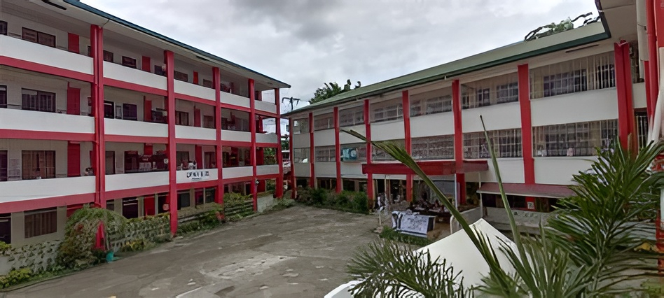
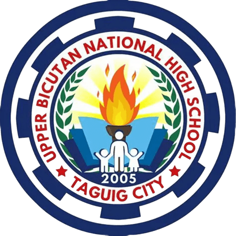
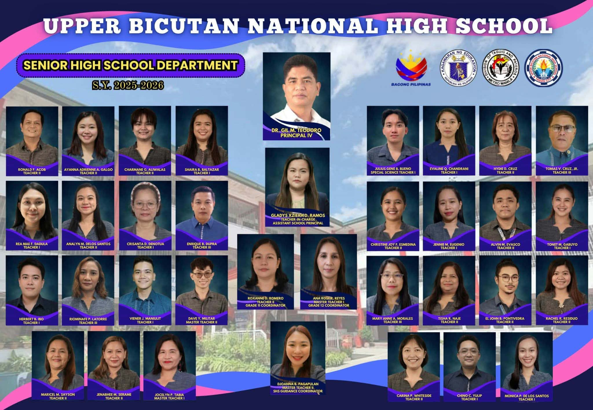
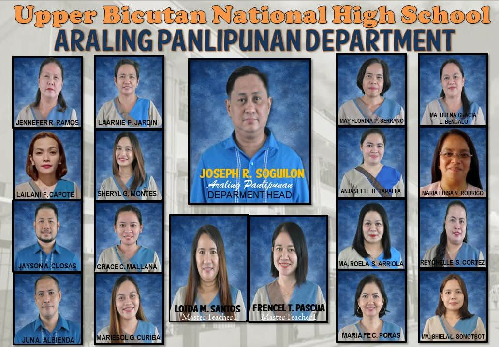
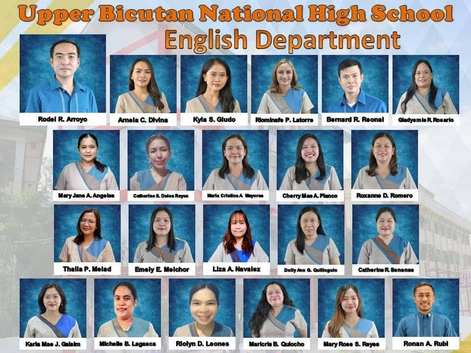
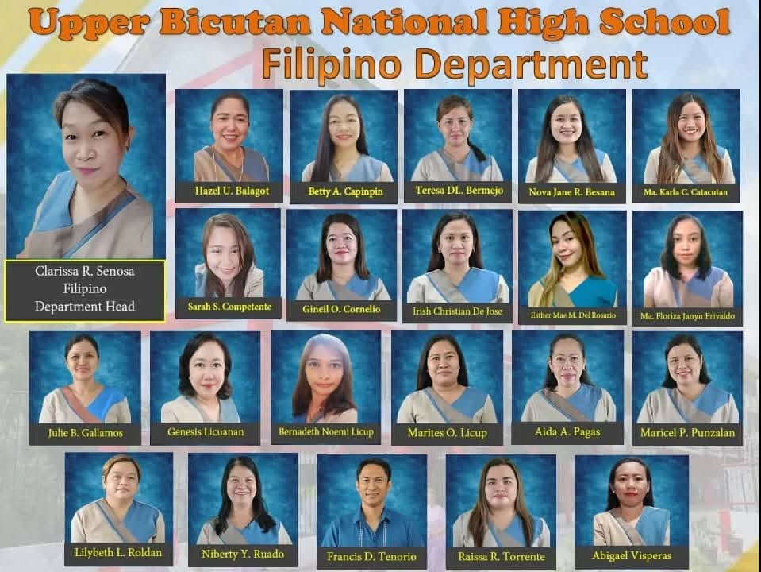
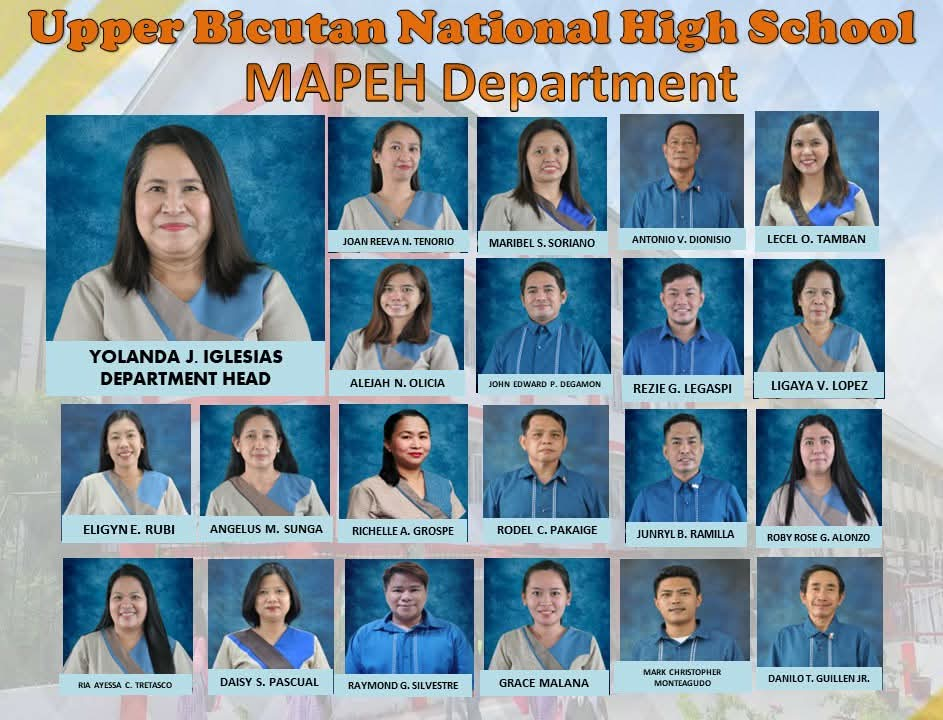
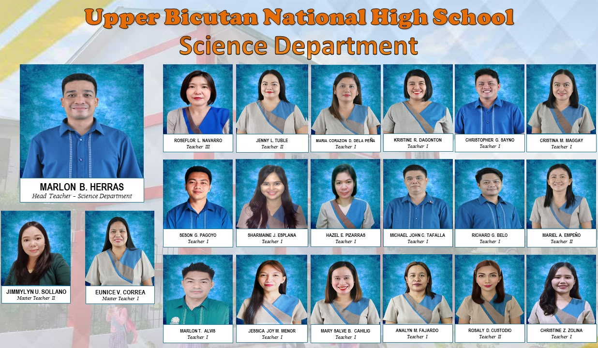
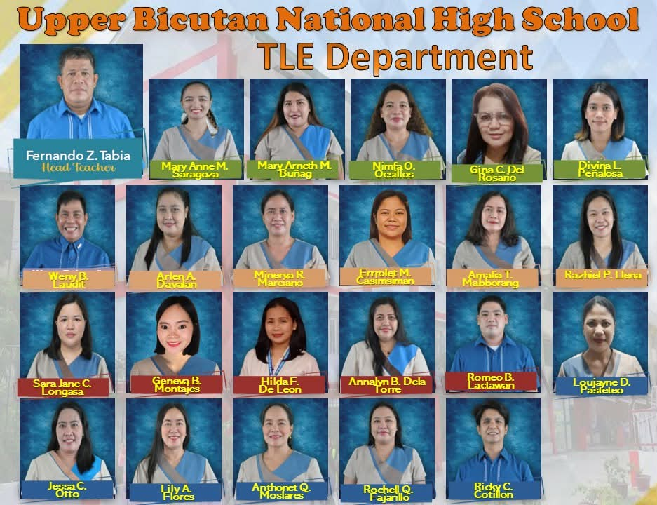
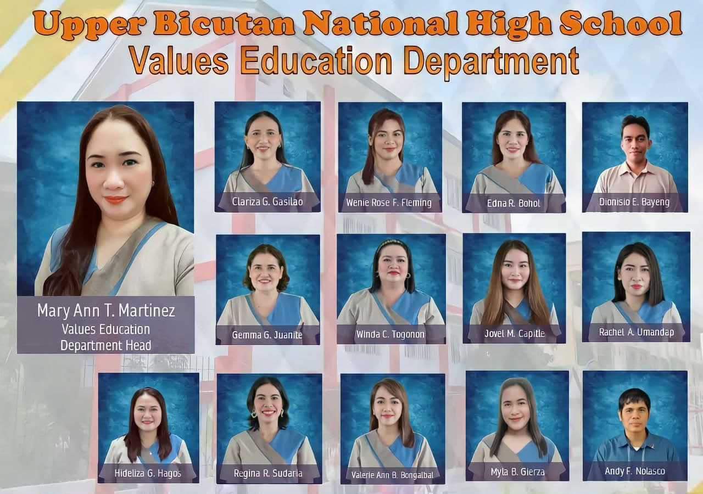

Upper Bicutan National High School was established by then Congressman Alan Peter S. Cayetano by introducing House Bill No. 5554 entitled “An Act Establishing a National High School in Barangay Upper Bicutan, Taguig, Metro Manila, to be known as Upper Bicutan National High School, appropriating fund therefore” which in turn became a law. The bill was approved by the House of Congress on December 14, 2005 and was transmitted and received by the Senate on December 22, 2005. The 2,500 square meter portion of the lot behind Upper Bicutan Elementary School was granted by the Department of Science and Technology under Secretary Estrella F. Alabastro under the Memorandum of Agreement between the Department of Science and Technology and Department of Education – Division of Taguig City and Pateros signed through a usufruct status.
The institution opened its door in the school year 2005-2006 with 11 teachers under the leadership of Mr. Nelson S. Quintong. On January 2006, the school was turned over to the leadership of Mr. Nestor R. Ramos who lifted the school into a new stage of development. Equipment and materials were gradually raised through partnership with the non-government organizations and the General Parents-Teachers Association. The first graduation was on March 2006 in a simple ceremony at the school grounds.
Mr. Santiago T. Alvis assumed office as principal of the school in July 2008. In his determination to provide the school with adequate rooms, another extension of the school building was constructed to accommodate its growing population. He also organized the function of the school by filling in administrative plantilla of personnel.
In July 2010, Mrs. Guia R. Dela Cruz was appointed principal of the school. She initiated significant changes in physical improvement and staff development in pursuit of quality education. All offices were converted into more suitable stations for work and two fully-functional computer rooms were constructed. Several activities were lined up to achieve the objectives of the school.
On May 15, 2014, Upper Bicutan National High School was turned over to the leadership of Dr. Gina R. Poblete. During her stay in this school, she substantially improved UBNHS in terms of facilities and academic performance. The linkages among stakeholders were also strengthened to support the school and its programs to provide quality and equitable education to students. With the help of the local government and non-government organizations, the school has improved and upgraded facilities being utilized by its teachers and students.
On December 11, 2020, Dr. Gina R. Poblete was re-assigned to Kapt. Eddie T. Reyes Integrated School as its new principal. Dr. Delfin R. Hernandez Jr. assumed the office of the school principal on the same day.
On May 24, 2022, Dr. Gil M. Teodoro began to be the School Principal with great excitement and strong dedication to maintain the school’s unwavering drive towards academic excellence and continuous improvements.







